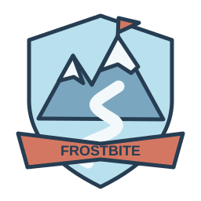

MAP 03 / FROSTBITE ASCENT / EXPERT
Take the
colder way.
Meet the snowman, the frosted forest, and the race-day kit for Windway’s long mountain climb. Eighteen editable SVGs, made to live together.
Meet me at base camp ↗
A whole mountain of character.
18 VECTORS / TRANSPARENT BACKGROUNDS

Snowy mountain
A switchback road climbs to a coral flag on a snowy summit.
Download SVG ↓
Black ice
A pale blue road patch with white cracks and a slippery wheel trail.
Download SVG ↓
Ice warning
An unmistakable coral-edged ice warning sign on a snowy post.
Download SVG ↓


Slalom obstacle
A solid snow block with coral stripes and an arrow pointing to the passing lane.
Download SVG ↓

Summit trophy
An ice-blue trophy with a mountain medallion and a summit ribbon.
Download SVG ↓

Ascent minimap
A tall switchback trail, ice zones, and a summit flag, not a closed lap.
Download SVG ↓
Frostbite Ascent badge
The crest of Windway’s hardest, coldest, longest climb.
Download SVG ↓
Winter checkpoint
A coral mountain checkpoint gate with snow caps and flag markers.
Download SVG ↓


Arctic fox
A curious white fox with a curled fluffy tail and dark winter paws.
Download SVG ↓

The hard way up.
Snow-covered mountains, narrow switchbacks, solid slalom blocks and marked low-grip ice zones. The route is one-way: every checkpoint leads higher, and the finish sits on the summit.
Actual vectors. Not screenshots.
Every individual drawing uses a 256 × 256 viewBox, rounded steel outlines and the same winter palette. Click for a large preview or download the SVG to edit it.